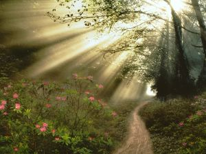
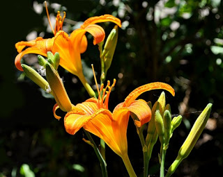

29 Вот и лето прошло, словно и не бывало
Вот и лето прошло, словно и не бывало. На пригреве тепло, только этого мало... (Тарковский)Пруд, обтянутый тиной и сверкающий тысячью бриллиантов в лучах полуденного солнца. Огромные стрекозы с прозрачными сетчатыми крыльями, семечки из собственного подсолнуха, огромные желтые цветы солнца. Ягоды и шум леса. Счастье? А разве не очевидно?
Все становится на свои места. Осознанная дрема, безумная жизнь, яркое уходящее лето. Хочется творить. Хочется чего-нибудь вынести из таинственного Ниоткуда. Хочется сыграть эту музыку, нарисовать эти фантастические картины..
Вооружаюсь красками и кисточками и разукрашиваю мир вокруг в оранжевый цвет. Он будет таким, как я его разукрашу
не надо бояться шипов. Они защищают огненные цветы, манящие и безумные. Не поранившись о шипы, до них не добраться.
Как освободиться от стереотипов, предвзятых идей, если находишься внутри замкнутой системы и на ход мысли влияет все вплоть до освещения?!
Хорошо сказал Шекли: - А может ли человек, не имеющий предвзятых идей, войти в искаженный мир и остаться цел? - Может. Но только не факт, что по выходу из искаженного мира они у него не появятся.
Хорошо было сказано - разум - самый сложный и еще не вполне сформировавшийся инстинкт. В общем, в процессе эволюции ведь все инстинкты оттачивались.. поначалу давали сбои, глючили так, что мама не горюй. А вот сейчас разум оттачивается... получается, однажды, когда этот инстинкт станет совершенным, люди перестанут делать ошибки? Забавно. Тут уж никакого восстания машин не понадобится - в кого мы превратимся?
Хочу связи с Нечто, хочу со страшной силой. Нечто меня слышит, откликается, говорит на своём языке, но я его не понимаю. Когда смотрю на небо, ощущаю пульсацию и разогрев в межбровье. Иногда оно словно поправляет мои мысли: так не думай, думай иначе, чище... Невероятно хочу его понять. Просто потребность органическая. Когда долго нет связи - все теряет смысл... хочу, чтоб восстановилась нормально связь и все расставила по местам.
Некоторые вещи, ты хоть тресни, никак не понимаю в людях. Умом-то все понимаю. А поставить себя на их место не могу... и, в общем, так всегда... эх, сколько бы человеческих проблем удалось избежать, если бы все друг друга не мерили своими мерками! Мы все такие разные - и это хорошо. Нам будет интересно вместе.
Я рада тому, что просто еще жива. Короткая штука жизнь. Может, я просто заморачиваться устала? Хочу грозы - очень хочу, хочу яркого солнца, хочу чистой прозрачной воды, хочу зеленого дождя... столько всего хочу. Хочу стоять под дождем, и чтоб дождь стекал по волосам. и чувствовать хочу все, остро, резко пронзительно. Человек живое существо и ему нужна связь с естественным. Иначе возникает искуственное, надуманное.
Иногда кажется странным, откуда у человека вообще тяга к неестественному. искривленному., неуровновешенному? Видимо, все просто... у человека в чем-то перевес, вот он и ищет что-то ненормальное, чтобы перевес был в другую сторону - скомпенсировать как-то...
Хорошо было сказано:
Счастье: одни его всю жизнь ждут. Другие везде ищут. А третьи везде находят.
Любой выход есть вход. Но все, почему то об этом забывают, когда хотят от чего-то сбежать. Все видят лишь зеленое "выход" из полутемного зала, но кто задумывается, что там возникнет новый зал и новая суета? Почему всегда то, чего у нас нет, кажется лучше, чем то, что мы имеем? Только я уже пришла к выходу, что я не хочу бежать. Наверное потому, что давно захлопнула за собой дверь под названием "выход".
Хочется, ай-как хочется спрыгнуть вновь в эту непокорную бездну и от души насладиться полетом!! И чтоб за это ничего не было. А если будет? Ну так что ж... лучше не жить, чтобы не умереть? Прятаться, чтобы не пострадать? Не чувствовать, чтобы не переживать? Жизнь многогранна... и пока не рискнешь - не откроешь. Это - классная игра, чьи правила знает лишь выдумщик, а ты бродишь и разгадываешь свой квест. И не факт, что к его окончанию ты все узнаешь. Ну что, скольжение? (Такс... если следующей записи не будет, считайте меня (коммунистом) - беспечным прожигателем жизни). Ай, была ни была...